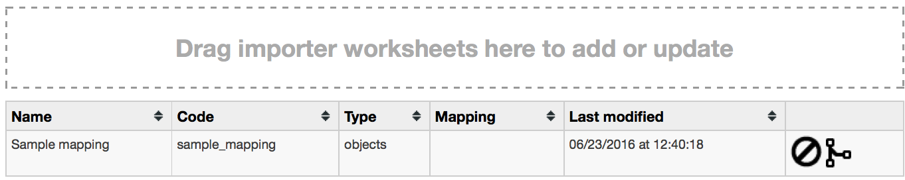
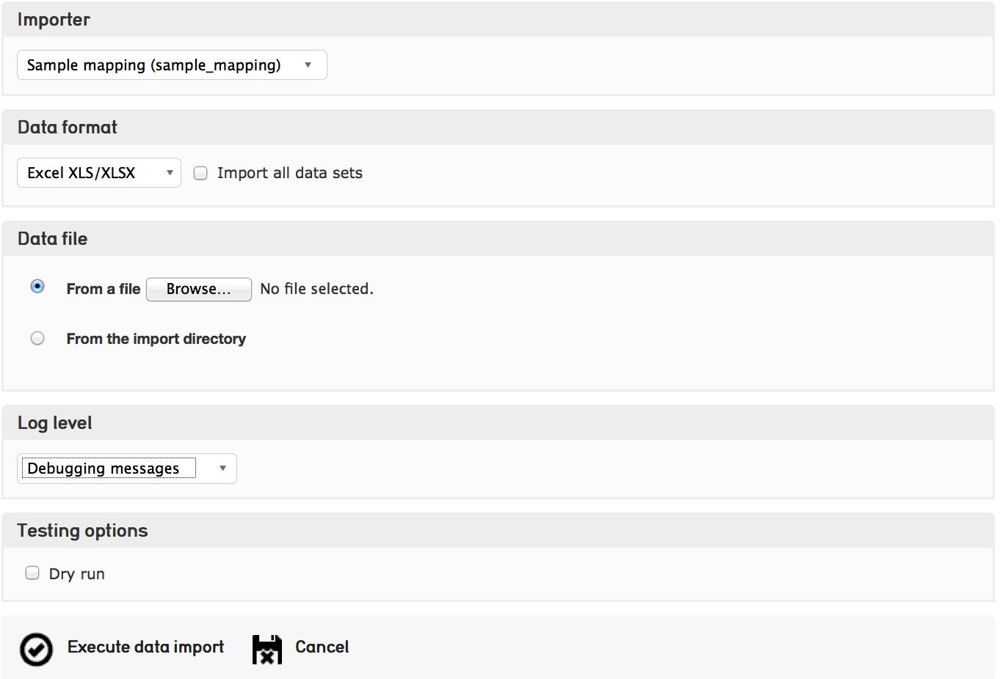

Basic Data Import Tutorial¶
- Introduction
- 1. Rule types (Column 1)
- 2. Settings
- 3. Source (Column 2)
- 4. CA table.element (Column 3)
- 5. Group (Column 4)
- 6. Options (Column 5)
- 7. Refinery (Column 6)
- 8. Refinery parameters (Column 7)
- 9. Original values/Replacement values (Columns 8 & 9)
- 10. Source Description & Notes (Columns 10 & 11)
- 11. Importing the sample data
Introduction¶
This tutorial will provide you with the very basics of writing a custom import mapping, using an example mapping document, sample data, and a basic profile configuration for Providence.
The tutorial is only intended to be a simple overview of basic import mapping principles. For more exhaustive and complete documentation of the many various options and rules, please refer to the Data Importer page.
To begin this tutorial, download the following three files.
At its simplest, the import mapping is essentially a schema crosswalk: for every data source you list, you declare a target “destination” for where the data should end up in CollectiveAccess. However, there are several additional rules and parameters you can set to ensure the “data reader” can correctly parse and process the data.
Here is a column-by-column explanation of each component of the import mapping document.
1. Rule types (Column 1)¶
For each line in your import mapping document, you must declare a rule type. This basically just sets what each line’s job is going to be during the import. The complete list of rules can be found on the Data Importer page, but these are the rules necessary to run a basic import, and sufficient for most data imports.
| Rule type | Description |
|---|---|
| Mapping | Maps a data source (such as a column in an Excel spreadsheet or a specific tag in XML) to a CollectiveAccess metadata element. |
| Skip | Use Skip to ignore a data source. |
| Constant | Sets an arbitrary constant value. Add the value to the source column and the value will be set in the corresponding metadata element for every record that is imported. |
| Setting | Sets general preferences for the mapping overall (SEE BELOW). |
2. Settings¶
Every import mapping requires a few general settings, explained below. Again, the complete list of settings can be found here, but these are the most basic and required settings to get started and handle most simple imports.
In our example mapping, we have set the name to Sample Mapping and code to sample_mapping. Because our sample data is in an Excel spreadsheet, we’ve set the inputFormat to XLSX. Our source data contains Objects, so we’ve set the table to ca_objects. Our system is empty (no records have been imported yet!) so the existingRecordPolicy is set to none. Finally, we are importing photographs, which in our profile corresponds to the object type code image.
| Setting | Description | Parameter notes | Example |
|---|---|---|---|
| name | Give your mapping a name. | Arbitrary text | My Sample mapping |
| code | Give your mapping an alphanumeric code of the mapping | Arbitrary text, with no special characters or spaces | my_sample_mapping |
| inputFormats | Sets type of source (input) data that can be handled by this import mapping. Values are format codes defined by the various DataReader plugins. | file type | XLSX |
| table | Sets the table for the imported data. If you are importing Objects, set the table to ca_objects. If you are importing Collections, set this to ca_collections, and so on. | Corresponds to the CollectiveAccess basic tables | ca_objects |
| type | Set the Type of record to set all imported records to. If you are importing Objects, what type are they? Photographs, Artifacts, Paintings, etc. This value needs to correspond to an existing value in the the types list. For objects, the list isobject_types. If the import includes a mapping to type_id, that will be privileged and the type setting will be ignored. | CollectiveAccess list item code | image |
| numInitialRowsToSkip | The number of rows at the top of the data set to skip. Use this setting to skip over column headers in spreadsheets and similar data. | numeric value | 1 |
| existingRecordPolicy | Determines how existing records in the CollectiveAccess system are checked for and handled for the mapping. Also determines how records created by the mapping are merged with other instances (idno and/or preferred label) in the data source. (In CollectiveAccess, the primary ID field is “idno” and the title/name field of each record is “preferred_label”.) |
none; skip_on_idno; merge_on_idno; overwrite_on_idno; skip_on_preferred_labels; merge_on_preferred_labels; overwrite_on_preferred_labels; skip_on_idno_and_preferred_labels; merge_on_idno_a- nd_preferred_labels; overwrite_on_id- no_and_preferred_labels; merge_on_idno_with_replace; merge_on_preferre- d_labels_with_replace; merge_on_idno_and_preferre- d_labels_with_replace | none |
Finally, you will notice that the source data contains a header in the first line, indicating what each column represents. Since we don’t want to actually import this line as data, we’ll set numInitialRowsToSkip to 1, meaning the data importer will skip the first line of the source data document.
3. Source (Column 2)¶
The second column in the mapping document is where you cite all data sources you wish to import. This is the first part of the crosswalk essentially. For data that is stored in Excel, citing the source is easy - simply cite the numbers of each column you want to import (Column A=1, Column B=2, and so on.)
Excel Tip: Corresponding A, B, C with 1, 2, 3 is easy enough, but when your source data has more than ten columns or so it can be kind of a pain to come up with the numeric equivalent of each letter. However, in Excel’s preferences you can change the columns to display numerically rather than alphabetically. Go to Excel Preferences and select “General.” Click the option to “Use R1C1 reference style.” This will display the column values as numbers.
In the example we’re using for this tutorial, the sample data is in Excel. However, you may need to import data that is in an XML format. XML sources are cited in xPath, which is the standard syntax for retrieving data encoded in XML. Documentation regarding xPath be found here.
Our source data sample contains 10 columns of data, and each are listed in the mapping document under Source.
Source data columns may also be referenced elsewhere in the import mapping (generally in the Options or Refinery columns described below) by prefixing the column number with a caret “^” (for example “^10”), which indicates to the mapping that the value from column 10 should be inserted.
This allows multiple columns to be combined by using the Options settings and is frequently used within the Refineries to create detailed related entities, collections etc.
4. CA table.element (Column 3)¶
In the mapping’s third column, you declare the destination, or target, for each source.
Most of the time, the import target is simply expressed as ca_table.element code. For example, ca_objects.description in our sample mapping and profile would take the values from column 5 in the sample data and import them to the Description field in the Object editor.
The correct way to cite the primary tables can be found here. Which table you use will likely correspond (in most, but not all cases) to the table you declared in the Setting table.
When you are importing to simple free text, DateRange, Numeric, Currency, or other kinds of datatypes, ca_table.element code is about all you need.
However, there are a few cases where some additional steps are involved.
Mapping to Containers: A Container is a metadata element that contains sub-elements. In order to import to specific sub-elements within a Container, you must cite the element codes for both the Container itself, as well as the code for the sub-element that is your ultimate target.
In our sample mapping, the Date import is an example of this. In the sample profile, you’ll notice that the Date field is actually a container with two sub-elements: a date range field for the date itself, and a date type drop-down menu to qualify the date.
Here, we import the date from the Column 3 in our source data to ca_objects.date.date_value, where date is the element for the container and date_value is the element code for the final import destination.
Often times when you are importing to a Container, you’ll be mapping to multiple sub-elements withing the same Container instance. That’s where the Group column comes in, which we’ll explain in the next section.
Finally, all of the above is assuming that your data corresponds to the primary table of your import mapping. That is, you have object-level data importing to the object table.
However, data will usually contain references to related tables, such as related entities, related lots, related collections, related storage locations, and so on.
In order to import data of one table (like ca_objects) while also creating and related records of other tables (like ca_entities), you will need to use refineries, which are explained in the following sections.
But all you need to know now is that when your mapping includes references to a table outside the primary table, you usually just need to cite the table name in this column.
For example, Source 2 is mapped simply to ca_entities in the sample mapping. All of the actual details happen over in the refinery parameters.
The solo exception to this is when you are creating Lot records. In this case, you set the ca_table.element_code to ca_objects.lot_id. This exception is expressed in the sample mapping.
5. Group (Column 4)¶
Declaring a Group is a simple way to ensure that all of your mappings to a Container actually end up in the same Container instance. You only need to use this column when you are mapping to Container elements.
In the example, we are mapping column 3 to ca_objects.date.date_value and using the constant rule to set ca_objects.date.date_type to “date created”.
But without declaring both of these distinct mapping lines members of the same Group, you’d end up with one Date container instance with the Date itself, and another Date container instance with the Date Type! To make sure both the Date itself and the date type end up in the same instance of the Date container, simply assign them to the same group in the fourth mapping column.
The name you assign the group is arbitrary, but it should be something that is recognizable to you. In our example, I’ve simply called the group “Date”.
6. Options (Column 5)¶
Options, expressed in the fifth column of the mapping document, can be used to set a variety of conditions on the import, process data that needs clean-up, or format the data with templates. Our example contains just a couple of the more basic, but super useful options. A complete list of options can be found here.
| Type of Option | Description | Parameter notes | Example for “Options” column of mapping |
|---|---|---|---|
| skipIfEmpty | If the data value corresponding to this mapping is empty, skip the mapping line. | set to a non-zero value | {“skipIfEmpty”: 1} |
| delimiter | Delimiter to split repeating values on. | delimiter value | {“delimiter”: ”;”} |
In the sample mapping, note the delimiter option set on our mapping to ca_objects.subject. Now refer to the second record in our sample data. You’ll notice that there are multiple subject values in the same cell that are separated by semi-colons. By setting the delimiter option in the mapping, you are ensuring that these subject values get parsed and imported to discrete instances of the Subject field. Without the delimiter option, the entire string would end up a single instance of the Subject field.
7. Refinery (Column 6)¶
If your data import requires related records, then you need to use refineries. In other words, let’s say in one case you are importing objects and all you need to bring in are Titles, Identifiers, Dates, and Description. No refinery will be needed here. On the other hand, say you need to import Titles, Identifiers, Dates, Description, and Creators... and the creators will be related to the Objects as Entities. This is where refineries come along.
While you can get really complex with refinery parameters, at its most basic a refinery simply creates a record, or matches on an existing record, and creates a relationship between it and the record you are importing directly from the source data.
In our example mapping, we are importing Images as ca_objects records. But using refineries, we are also creating and relating Entity records to those Object records.
Our example uses an entitySplitter, but these same principles apply to the splitters for other tables: placeSplitter, collectionSplitter, and so on.
The objectLotSplitter requires a few extra settings, all of which are cited in our example mapping.
Lastly, Splitters aren’t the only type of Refinery - they’re just the most common. For a complete list of refineries, go here.
8. Refinery parameters (Column 7)¶
In our entitySplitter example, we’ll be using the most basic and commonly used refinery parameters: entityType, and relationshipType. In the objectLotSplitter we will be using another useful parameter called attributes.
| Type of Refinery parameter | Parameter notes | Example for “Refinery Parameter” column of mapping |
|---|---|---|
| relationshipType | Accepts a constant type code for the relationship type or a reference to the location in the data source where the type can be found | {"relationshipType": "^10"} or {"relationshipType": "author"} |
| entityType | Accepts a constant list item idno from the list entity_types or a reference to the location in the data source where the type can be found | {"entityType": "individual"} |
| attributes | Sets or maps metadata for the entity record by referencing the metadataElement code and the location in the data source where the data values can be found | {
"attributes": {
"biography":"^23",
"address": {
"address1": "^24",
"address2": "^25",
"city": "^26",
"stateprovince": "^27",
"postalcode": "^28",
"country": "^29"
}
}
}
|
9. Original values/Replacement values (Columns 8 & 9)¶
In some cases, particularly when you are mapping to a list element, you may need the mapping to find certain values in your source data and replace them with new values upon import. In the Original Value column, you may state all values that you wish to have replaced. Then, in the Replacement Value column, set their replacements. You can add multiple values to a single cell, so long as the replacement value matched the original value line by line.
In our example, there is a list element called “Reproduction” with values for reproduction, original, and unknown. In our source data, however, you’ll notice that the data input for these values are abbreviated (e.g “orig”, “repro”, and “dontknow”). By using original and replacement values, our mapping transforms “orig” to “original” and “repro” to “reproduction” so that they can match on the list item code for the corresponding values in CollectiveAccess.
10. Source Description & Notes (Columns 10 & 11)¶
These two columns are used to clarify the source and purpose of each line in the mapping and are optional. Source Description is generally a plain text label or name for the original source column to allow for easy reference to which fields are being mapped (or skipped) in the mapping. Notes provides a space to explain how and why a certain line is mapped in the manner that it is, for example explaining why a certain value is being omitted or how an entity line is being split and related to the main record.
These fields can be useful for future reference if a mapping is intended to be used repeatedly to be sure that the selected mapping matches the source data.
11. Importing the sample data¶
Once you have installed the sample profile configuration, you can load the sample mapping by navigating from the global navigtion menu to Import - Data and dragging the sample mapping file into the box labelled “Drag importer worksheets here to add or update”.
Once the mapping is loaded, click on the icon to the right and you’ll be able to upload the sample data on the following screen. From here, you can execute the data import!
